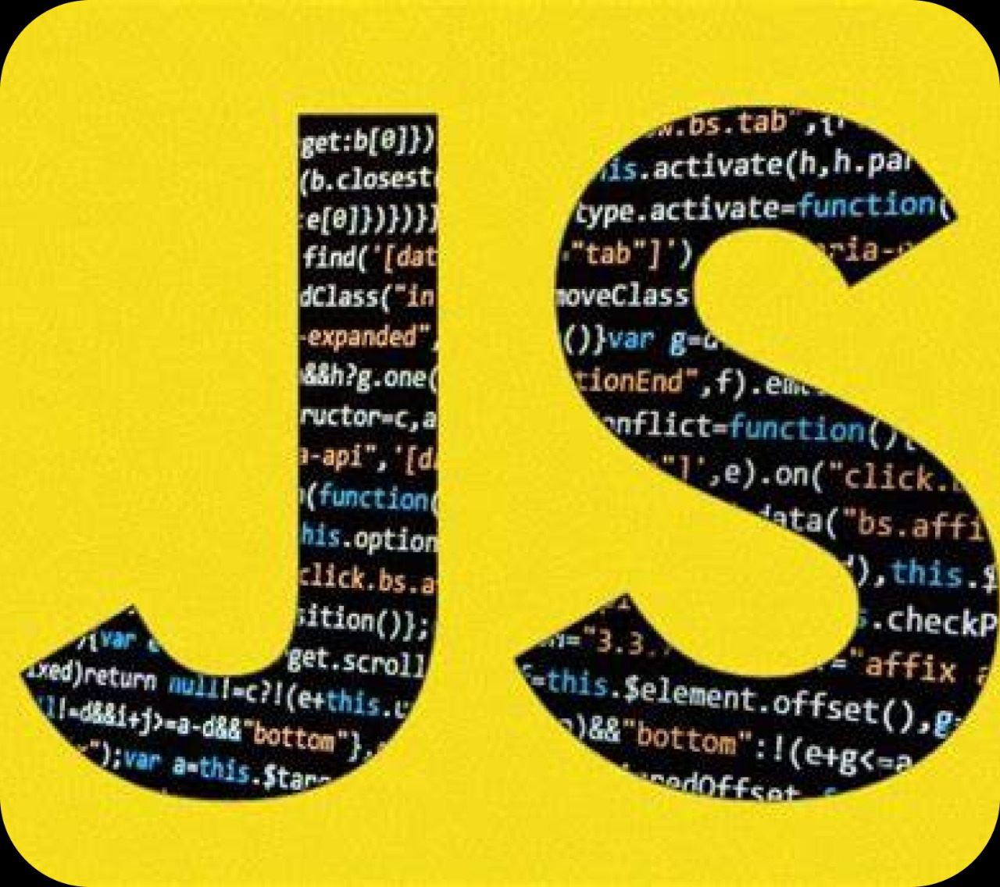

JavaScript: Explorando a Linguagem Essencial para a Web
Curiosidades
Criado em 1995 por Brendan Eich em apenas 10 dias, JavaScript foi inicialmente chamado de Mocha, depois renomeado para LiveScript, antes de finalmente adotar o nome JavaScript por razões de marketing (embora não tenha relação direta com a linguagem Java).
É a única linguagem de programação nativa dos navegadores, o que o torna indispensável para o desenvolvimento web.
JavaScript não é só para o frontend. Graças ao Node.js, pode ser usado no backend, tornando-se uma linguagem full-stack.
Principais Funcionalidades
Interatividade: Adiciona interatividade a páginas web (animações, validação de formulários, etc.).
Execução no Lado do Cliente e Servidor: Com Node.js, pode ser executado tanto no cliente (navegadores) quanto no servidor.
Desenvolvimento Full-Stack: Permite o desenvolvimento completo de uma aplicação com uma única linguagem (front-end e back-end).
Manipulação de DOM: Permite modificar o conteúdo HTML e o estilo CSS em tempo real.
Onde é Usada
Desenvolvimento Web: Linguagem essencial para desenvolvimento de páginas interativas (com bibliotecas como React, Vue.js, Angular).
Desenvolvimento Backend: Com Node.js, JavaScript pode ser usado para criar APIs e sistemas de backend escaláveis.
Desenvolvimento Mobile: Com ferramentas como React Native ou Ionic, é possível criar aplicativos móveis para iOS e Android.
Desenvolvimento de Jogos e Aplicações Desktop: Com frameworks como Electron, é usado para criar aplicativos desktop (ex.: Slack, VS Code).